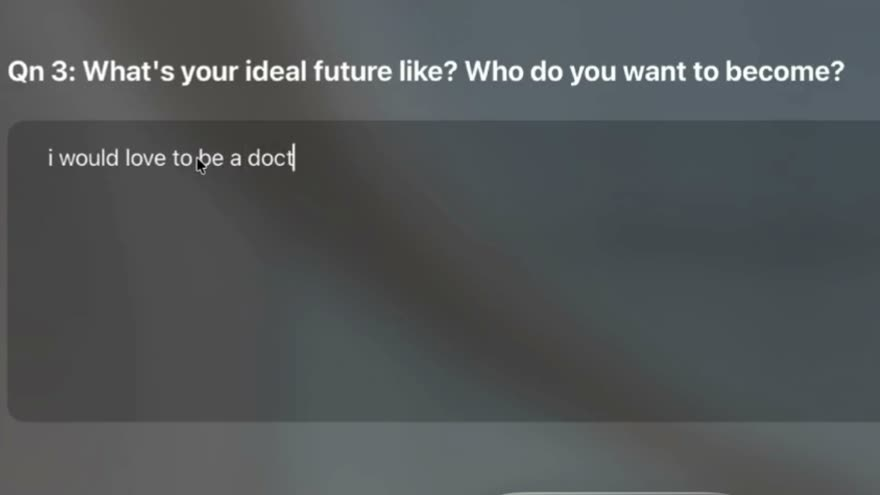
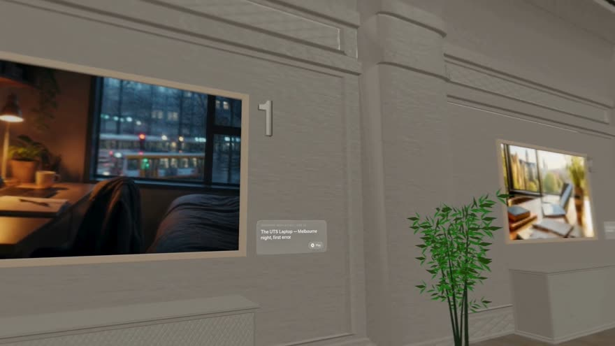
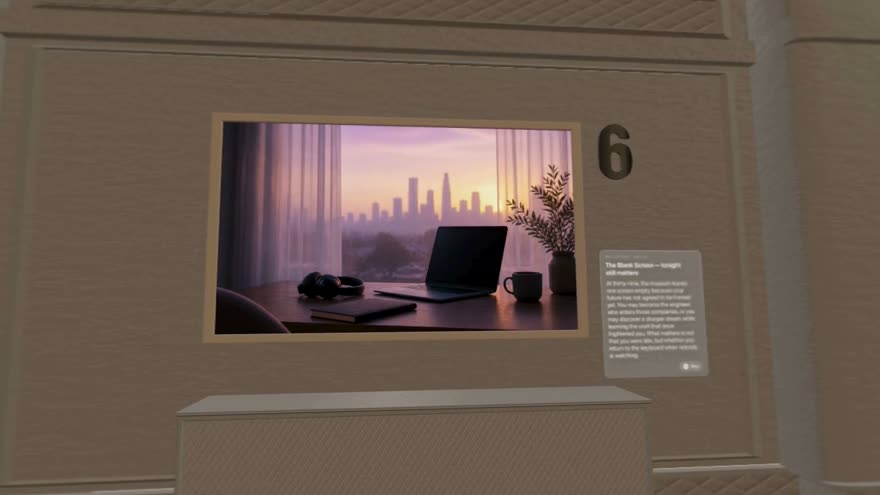
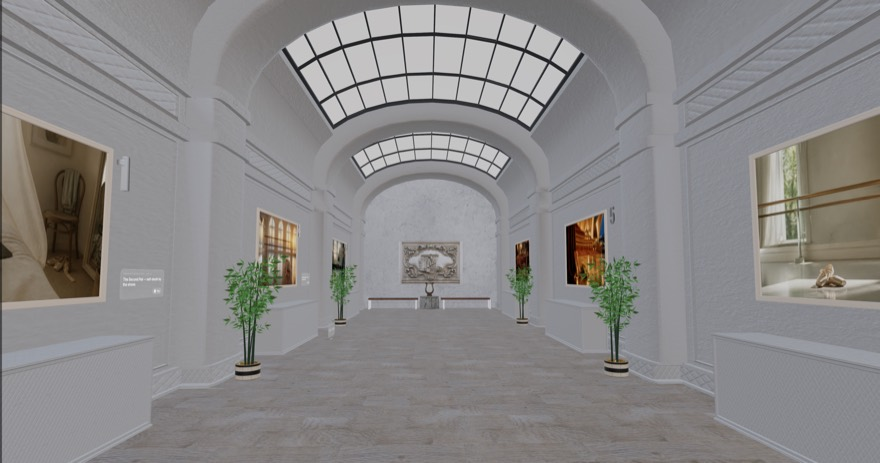
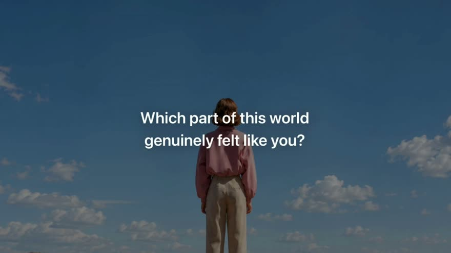

Apple Foundation Program · 2026
visionOS · four-person team · I built the app
Every wellness app we looked at asks the same question — how do you feel today? — and offers the same answer: an escape. A quiet beach. Rain on a window. Somewhere else.
Visual Eyes asks who you want to become, and does the opposite of escaping. It builds a short documentary of that life and makes you walk through it.
The thesis we settled on: balance is not a beach you escape to. It is the steadiness of having seen the full cost of a path and still choosing it — or clearly choosing not to. You cannot align yourself with a future you have never honestly looked at.
That is why four of the five rooms are the quiet cost of the path and only one is its summit. We took the tone from the 7 Up documentaries: plain, unsentimental, second person. Not a vision board.





You answer a few questions about an aspiration. An AI curator writes a five-beat story of that life and paints an image for each beat. You then step into a pre-downloaded 3D museum and walk past your own five images while a documentary voice narrates them. At the exit it asks one question and hands the decision back to you: which part of this world genuinely felt like you?
The pipeline is two stages, and the split matters. Stage A sends the answers to the model with a strict JSON schema, so the story comes back as five typed nodes — beat, narration, image prompt, tone — rather than prose I would have to parse. Stage B takes those five image prompts and generates the images in parallel, because five sequential round trips is the difference between a demo that holds attention and one that doesn't.
The finished images get composited onto named wall frames in a USDZ gallery, so the museum geometry ships with the app and only the pictures on the walls are generated. Narration runs through a speech-to-text → model → text-to-speech loop, which means you can talk back to the curator while you're standing in the room.
There is no database. A visit lives in memory for a single session and then it is gone. That was a decision, not an omission — the experience is one walk through one possible future, and keeping a library of your past futures would have quietly turned it into a different product.
I built the app — the SwiftUI flow, the generation pipeline and its typed schema, the RealityKit world builder that places generated images onto the gallery walls, and the voice loop. It was a four-person Apple Foundation Program team; the concept, visual direction and the demo film were shared.
The decision I'd defend: shipping an iPad and iPhone first-person walkthrough of the same museum alongside the Vision Pro build. It exists so the pipeline can be validated without a headset — and on a project where the target device is the scarce resource, a path that doesn't need one is worth the extra surface it costs you.
Generated 3D was the part I could not make behave. Images came back upside down, or with proportions that were subtly wrong once they were hanging on a wall, and each generation took long enough that a single bad one cost real time. Placing them was manual — I checked each image against its wall frame one at a time.
The architecture on this page is what that failure left behind. We set out to generate the world you walk through. We shipped a museum that was modelled and downloaded in advance, with only the pictures on its walls generated. That was a retreat, and it was the right one: it moved the unreliable part into the one place where a bad result is survivable.
The demo failed anyway. On showcase day the API key would not connect and the app did not run in front of the room.
I was the only person on the team who could tell what was buildable, and I treated that as knowledge rather than as a job. We were four weeks into an Apple Foundation Program cohort that was mostly designers, and the concept kept growing: look around from one spot, then walk around — 3DoF to 6DoF — then generate the world you walk around in. I could see the last step was not going to happen. The direction was not settled until the Monday of the final week, and I spent the five days after that mostly not sleeping.
Saying "that isn't feasible" is not the same as making it land. What I owed that team was a smaller, concrete alternative early enough to choose it calmly — not a correct opinion delivered too late to act on.
The second thing is worse, because it was a choice. I believed I would be fastest working alone, so I only offered to teach the people who already looked like they wanted to learn, and I ended up building the whole app myself. That is not a team, it is one person with an audience. I still think I was faster. I no longer think that was the thing to optimise.
Still a prototype, and further from a finished product than the screenshots suggest. The generation pipeline, the walkable gallery and the narration work end to end. What we never got to was the thing the project was actually for: helping someone see a future clearly enough to choose it or let it go. We built the museum. I don't think we ever proved it does that.